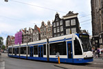
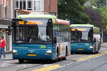
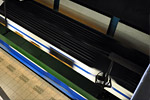

Transporte en Amsterdam
Amsterdam es una ciudad hecha para el transporte público, la dificultad para circular por el centro de la ciudad y el alto coste de aparcamiento hacen que los amsterdaneses se lo piensen dos veces antes de utilizar (o comprar) el coche. Cada día se realizan más de un millón de trayectos en transporte público, algo que es sorprendente si se tiene en cuenta que la población de Ámsterdam es de tan sólo 750.000 habitantes y que la mayoría de ellos tiene al menos una bicicleta.
Medios de transporte
Aunque Amsterdam es una ciudad idónea para recorrer a pie, no está de más conocer sus medios de transporte. Cuando el tiempo no acompaña o para visitar las zonas más alejadas del centro es la mejor opción. Para el transporte público en Amsterdam, GVB es la principal compañía de transportes públicos. Proporciona servicio de metro, tranvías y autobuses integrados en toda Amsterdam y sus alrededores. En 2010 se introdujo un sistema completo de ventas de billetes, permitiendo a las personas viajar en tranvías, autobuses e incluso trenes utilizando una tarjeta chip OV de transporte de Amsterdam. Sin embargo, la tarjeta chip OV es más útil para residentes y visitantes de largo plazo.
Ordenados por utilidad, estos son los principales medios de transporte en Amsterdam:
-
Tranvía  Si hay un medio de transporte lo suficientemente extendido en Amsterdam ese es el tranvía. Actualmente en la ciudad circulan más de 200 tranvías.
-
 AutobúsLos autobuses tienen una ventaja con respecto al tranvía: circulan las 24 horas. Conoce las distintas líneas, precios y descuentos de los autobuses en Amsterdam. -
BicicletaUn medio de transporte barato, rápido y ecológico. Con 15.000 kilómetros de carril bici y unas infraestructuras perfectas ¿Qué más pueden pedir los amsterdaneses?
-
TaxiLos taxis en Amsterdam son probablemente los más caros de Europa. Conoce los diferentes tipos de taxis y sus tarifas.
-
 MetroCon sólo cuatro líneas y, a diferencia de en otras ciudades, el Metro de Amsterdam es un medio de transporte poco interesante para el viajero habitual.
Consejos de viaje para Amsterdam
·Dirigirse a la oficina de turistas de Amsterdam y comprar una tarjeta de uno, dos o tres días (Amsterdam Pass) para viajes ilimitados en todos los transportes públicos y entrada gratis para la mayoría de museos y atracciones de Amsterdam. ·Los grupos organizados de viajeros entre 10 y 25 personas pueden disfrutar de un billete de transporte de Amsterdam en grupo. ·Evitar comprar un billete de una hora y en su lugar comprar un billete de múltiples días para la duración de la estancia. ·Planificar el viaje en el transporte público en 9292.nl/en y descubrir detalles tales como las transferencias, paradas y plataformas para evitar perderse. ·¡Alquilar una bicicleta y explorar Amsterdam como un verdadero holandés!